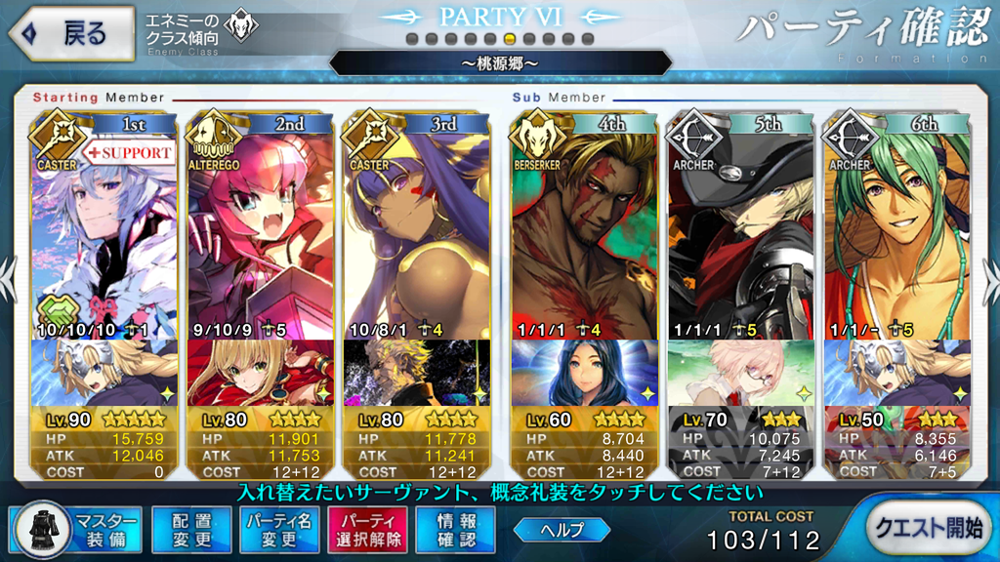

【FGO】アガルタ 桃源郷 八連双晶集め 周回
目次
この記事ではFGOフリークエストの周回を扱います。
編成画像にて最終再臨絵のネタバレがあるのでご注意を
基本方針
- 3T周回する
ドロップアイテム
- 八連双晶
エネミー構成
- ゴーレム系のみ
- 3wは高HP（28万程度）のゴーレム単騎
編成

カレスコニトクリスで1～2wをすっ飛ばし、3wは英雄作成込みのメカエリで吹き飛ばす
画像では凸カレスコだが、マーリンの夢幻のカリスマがあるため未凸でも可
凸バトルオリンピアは他のNP60以上礼装で代用できるか？
2wで星を出して3wをクリティカルで対処する方法もなくはないが、カード運に大きく左右され安定しない
マスター礼装を極地に拘らなければ、火力役の幅は広がる
周回用キャラ選別
アーラシュ/スパルタクス
いつもの
NP獲得＋全体宝具
バーサーカー染めの編成のため、比較的選択の幅は広い
低レアならメドゥーサ、アヴィケブロン、パラケルスス、シェイクスピア、配布ならジャンヌ・ダルク・オルタ・サンタ・リリィ
特にNP+20と合わせて即座に宝具を打てるアヴィケブロン、パラケルススは優秀と思われる（筆者は2基とも育成しきれておらず、試せていない）
凸カレスコとNP20配布系をあわせて宝具を2連打できるので、1～2wを任せられるかもしれない
ニトクリスであれば未凸カレスコでも高速神言をLv8以上にすることで1～2wをすっとばせる
高威力単体宝具持ち
3w突破のため、単体に高いダメージを叩き出せるサーヴァントを採用したい
礼装によるサポートを考え、バスター宝具であれば初期NP50～60程度＋マーリンでNP100を達成できると良いだろう
ケツァル・コアトル
カリスマによる全体バフがあり、1～2wの火力補助もこなせる
自由なる闘争をLv10にしておけばNPを30獲得できるため、初期NP50の礼装でマーリンと合わせてNP100を達成できる
バスター宝具であり、英雄作成とも噛み合う
ただし、☆5サーヴァントのため入手しづらく、育成にも手間がかかる
水着マルタ
水辺の聖女は最大レベルでNP+30
特攻が入るわけでもなく、水辺でもないので火力はそこまで伸びないが、宝具レベルが上がっていれば採用の余地あり
礼装はエアリアルドライブやゴールデン相撲岩場所、防御デバフの効果アップを見込んで魔性菩薩でも良い
ベディヴィエール
☆3セイバー
セイバーピックアップやCBCで宝具レベルを上げてある場合は採用が検討できる
入手機会こそ少ないものの、軍略以外にレベルを上げておくべきスキルがなく、低レアのため育成コストが軽い
しっかり銀フォウを入れておかないとLv70程度では撃ち漏らしが発生する
ただし、相手はバーサーカーなので追撃すればどうとでもなる
礼装は、宝具を放つ前に入るバスターアップが強化されるので魔性菩薩が良いだろうか
坂田金時（狂）
自力でNPを+50できるバーサーカー
怪力による自前バフもあり強力だが、☆5のため入手しづらく、育成に手間がかかる
三蔵
自前でNPを+80できるキャスター
キャスター故に火力はやや低いが、NPを+80できるため、黒聖杯とマーリンをあわせての高いダメージが期待できる
NP獲得スキルに宝具威力アップのおまけもついている
同様にNPを大量に獲得できるオケアノスのキャスターやメディアでは火力が流石に足りない
メカエリチャン
アルターエゴのバスター担当
オーバーロードで獲得できるNPは20のみなので、マーリンと合わせて100にするためには初期NP60以上必要になる
火力も伸ばそうとすると凸バトルオリンピアが最適だが、なければ他の礼装でも代用できる？
配布サーヴァント故、イベントにしっかり参加していれば宝具レベルが上がっている
坂田金時（騎）
自前でNPを+50できるライダー
スキルや宝具にクイックアップがあり、OCで伸びるため魔性菩薩で火力を伸ばせる
クイック宝具のため、英雄作成とは噛み合わない
マーリンではなく優秀なクイックバフ持ち（スカサハやアタランテ）と組ませるのもアリ
配布サーヴァントのため、イベントにしっかり参加していれば宝具レベルが上がっている
ロビンフッド
ダイブ・トゥ・ブルーやニュービギニング、あるいは魔性菩薩を持たせ、マーリンではなく孔明を用いる
孔明の宝具からチェインすれば確実